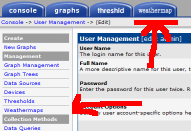
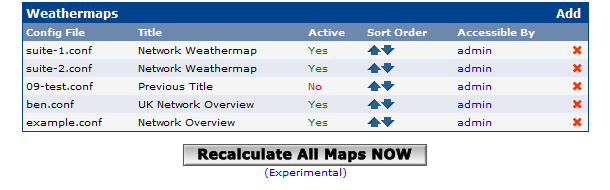
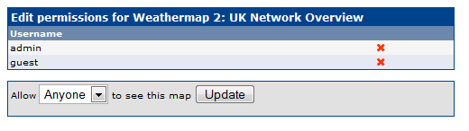
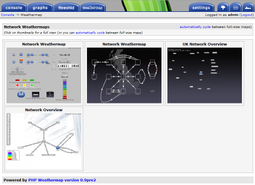
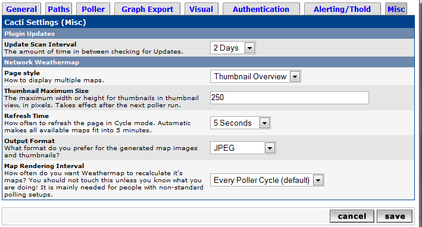

Since v0.8 there is support for tighter Cacti integration, using the Cacti Plugin Architecture that Jimmy Conner (aka cigamit) has developed for Cacti 0.8.x.
NOTE: To start using the plugin, you should follow the installation notes through first.
With that done, you should now have a Weathermap tab showing in your Cacti web interface, and a Weathermaps entry under Management in the Console menu. If you already have your map configuration files, you should now copy those into the 'configs' directory, inside the weathermap directory, so that the plugin can find them. If you don't, there's a complete example map in the weathermap/docs/example directory, that you can use to get started. Copy the example.conf from there into your configs/ directory instead.
Once your maps are in the configs directory, choose the 'Weathermaps' link from the left side menu of the Console page in Cacti. A new screen appears, showing the configuration files that Weathermap is currently handling. Choose 'Add' and pick one of your configuration files from the list.
It should appear in the 'Weathermaps' list now, and you can see whether it will be updated on the next poller run ('active'), and who will be able to see it.
At this stage, you should probably wait five minutes (a poller cycle), reload the Weathermap tab, and make sure your map was created. If it doesn't show up, turn on the regular Cacti DEBUG logging, and wait for the next poller cycle to finish. You should get some useful error message from Weathermap in the Cacti logs to help you figure out what went wrong.
Don't forget to turn DEBUG off again, once you are done, as it can quickly take a lot of disk space!
Most serious errors will also show up in the log, even with DEBUG turned off.
If your map was created OK, then welcome to Weathermap!
The rest of this page is a reference to all the available options in the plugin.
Access-control with the  Weathermap plugin is in two layers. First, you can control who will see the Weathermap tab (and the 'Weathermaps' management link) in the usual Cacti way: in User Management, give your users the 'View Weathermaps' right. Second, you can control which weathermaps that they will see, from the Manage Maps page. Click on the link for your new map in the column marked 'Accessible By', and you will get a page where you can add and remove users from the list who can see this particular map. There is one extra user 'Anyone', that matches any authenticated user. This is to save you adding new users to a list when you want to have a 'global' map available to all users.
The final feature of the Management page is that you can change the order in which the maps are shown, by clicking the Sort Order arrows to move them up or down.
Since this is what it's really all about - presenting your users with nice maps!
Your users can access the maps that they have been allowed access to (see above) by clicking on the Weathermap tab. You will need to give them the right to View Weathermaps in the User Management page first. The user can choose to cycle between the maps that they can see (if there is more than one). Also note: if you use OVERLIB popup graphs in your maps, your users must have access to view those graphs in Cacti, or they will see a broken image icon instead!
All of the Weathermap plugin's settings are in the Misc tab of Cacti's Settings page (Console..Settings on the left side menu).
Page style gives you two choices of layout - a big stack of fullsize maps on one page, or a grid of thumbnails, each of which leads to a full size map view. From either view, you can also choose the Cycle mode. Cycle mode gives you an automatically refreshing page cycling through all the maps available to you.
If you only have one map (or a user is only allowed to see one), then the user will get a full-size map regardless of the setting. Also in the settings page, you can choose the maximum size of the thumbnails. The Page style setting takes effect immediately, but the thumbnail size is used next time the maps are generated by the poller.
The last display-related Weathermap setting in the Settings page is the Refresh Time for Cycle mode. You can choose how long each map stays on-screen for. The default is 'Automatic', which takes the 5 minutes that the data is valid for (a poller cycle), and divides it evenly between the available maps - if you had 5 maps, they would each get 1 minute onscreen before the page reloaded with new updated maps. This is nothing to do with changing how the Cacti poller works!
Output Format allows you to change the image file format used by the plugin. Since v0.9, Weathermap can create PNG, GIF and JPEG files, as long as the GD library on your system was compiled with the correct libraries. JPEG images can be quite a bit smaller than PNG, without much degradation in quality. PNG is the default.
Map Rendering Interval is intended for advanced users only. If you use the 1-minute polling patch for Cacti, you might not want to have Weathermap redraw your maps every minute. This option allows you to change this, so that Weathermap only redraws every n polling cycles.
During that one cycle when it does redraw, your polling cycle will still be longer than usual, so you can also turn off the poller part of Weathermap, so that it doesn't redraw at all. This allows you to use the user-access parts of the plugin, but manage the redrawing of maps yourself. To redraw all the maps outside of the standard Cacti poller process, there is a special PHP script weathermap-cacti-rebuild.php that does the same job as the Cacti poller. To use this, you need to edit it, and change the path in the top of the file to point to your Cacti root directory. Then set up a second /etc/crontab entry, to redraw your Weathermaps without slowing down your Cacti polling:
*/5 * * * * cactiuser /usr/bin/php /your/cacti/path/plugins/weathermap/weathermap-cacti-rebuild.php
You will need to change the paths to php and cacti, and the user that cacti runs as. If you use 'crontab -e', instead of editing /etc/crontab directly, then you should remove the 'cactiuser'. In normal use, you don't need to add a cron job - the Cacti poller does this work for you.
With TheWitness' Boost plugin installed in Cacti, the rrd files are no longer updated every poller cycle. This is a problem if you are using regular rrdtool TARGETs. There is support in the Weathermap plugin to directly access data from the poller instead of rrd files. You can find out more in the Targets Reference.
Another alternative, which requires changing your TARGET lines, is the DSStats plugin, also by TheWitness. This also collects data into the Cacti database, and has it's own benefits if you want to produce periodic summary maps. You can find out more in the Targets Reference.
Both of the above datasource plugins allow you to access some additional information from the Cacti database about the data being polled (see the Targets Reference for more).
Additionally, there are some other datasource plugins that can access more information from Cacti: cactithold works with cigamit's THold plugin, and cactihost accesses Cacti's host status information.
Weathermap has quite a lot of logging. If you have a problem, then check your cacti.log for lines starting WEATHERMAP. Most normal errors will appear in here with Cacti's logging level set to LOW. If you set Cacti's logging level to DEBUG, then Weathermap will produce a lot of log information as it runs. Also see the FAQ section of this manual, and the network-weathermap.com website for more.
On the Weathermap management page, there used to be a 'Recalculate NOW' button. It worked by running the normal map update process immediately, but did so as the user that runs the webserver. This causes some permissions problems that you need to understand in order to use it. People would just click it and complain it didn't work, or killed their maps. I added a warning explaining the problem. People still complained. I removed the button.
The code is all there still, so if you really promise not to ask me why your maps all stopped working after you press the button, you can re-enable it. Simply open weathermap-cacti-plugin-mgmt.php in and editor and change the line that says
$i_understand_file_permissions_and_how_to_fix_them = false;
to
$i_understand_file_permissions_and_how_to_fix_them = true;
Now you have the button, the following explains the issues in detail.
This will try to recalculate all your maps on demand. This is more complicated than it sounds, due to file permissions! Normally, the Cacti poller would create the images and HTML files in the output directory, which means they are owned by the 'cactiuser', whatever that user is called on your system. When you click 'Recalculate NOW', the redraw process is run from within your webserver, and runs as whatever user runs your webserver (nobody, www, apache...). To allow for both these situations, the output directory and it's contents must have appropriate permissions to allow both users to write to the files. The lazy insecure way to do this is just 'chmod 777 output/*', but that allows everyone to write to the files! A better way is to create a new group, make 'cacti' and 'www' members of that group (as well as their other groups), then 'chgrp -R newgroup output' and 'chmod 770 output/*' so that they can both write, but nothing else can. This is why the button is labelled 'experimental'.